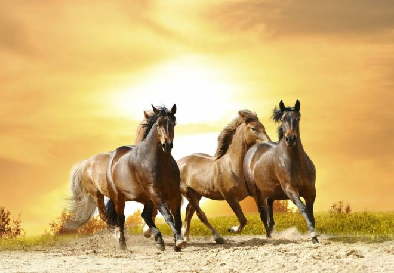
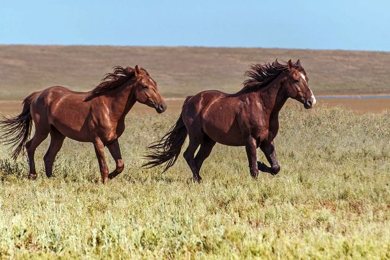
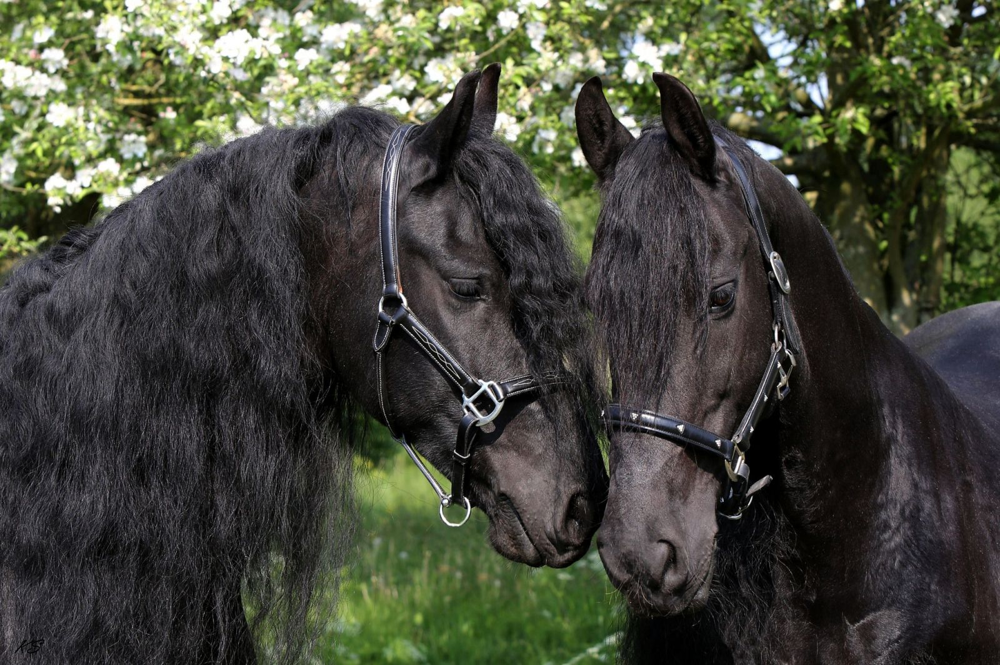
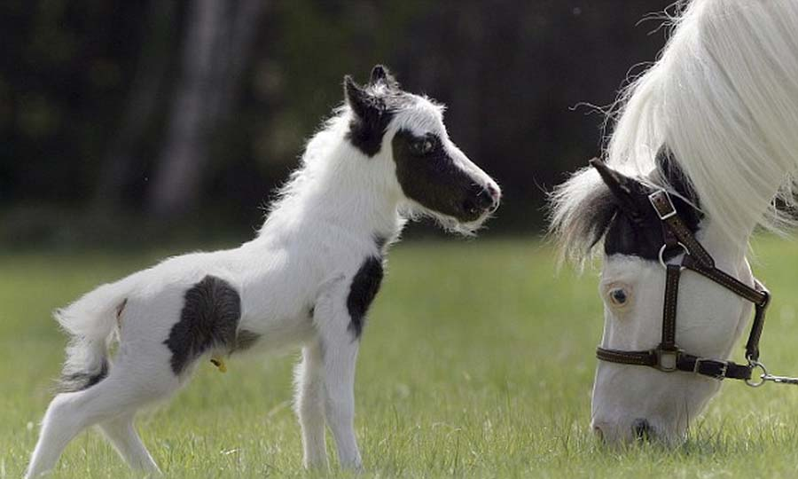
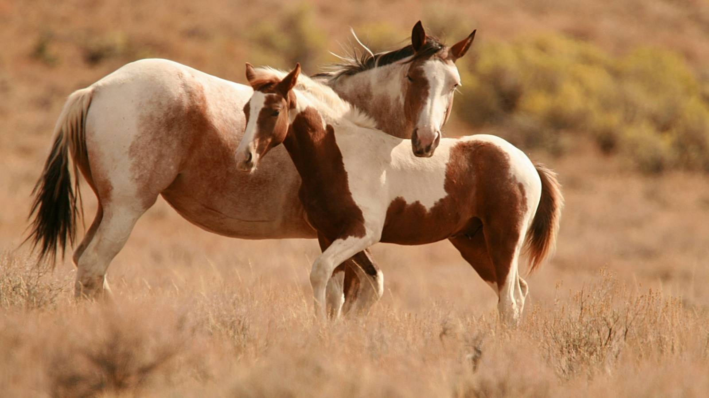

Коні – мабуть, найграндіозніші тварини нашої планети. І хоча більшість з нас дійсно захоплюється цими тваринами, та все ж є безліч цікавого про них, про що ми, напевне, і не здогадувались. Отож, читайте…
Дикі коні: опис, породи, де живуть
Кілька тисячоліть тому степи і ліси Євразії населяли сотні тисяч диких коней. Незліченні табуни цих вільних тварин кочували по безкрайніх просторах від Забайкалля та Монголії до Причорномор’я і Дунаю. Коли-те в природі були тільки дикі особини, приручення почалося пізніше Людина тоді робив перші спроби одомашнити коня. Спочатку спіймані коні використовувалися в якості джерела м’яса та шкіри:
- - з шкур люди робили одяг, ковдри, покриття для своїх жител;
- - жили йшли на нитки, мотузки, тятиви для луків;
- - з копит виготовлявся клей.
Поступово приручення коней стало звичною справою. Виріс у неволі лоша ставав зовсім домашнім. Від кобил люди стали отримувати молоко, робити з нього кумис і сир. Минуло кілька століть, і чоловік здогадався запрягти коня в упряж.
У природі коней ставало все менше. Найсильніший удар по популяції диких копитних завдало землеробство – люди почали розорювати степу, і табунів стало просто ніде жити. Довершили справу мисливці з вогнепальною зброєю. Останній в Європі дикий кінь тарпан був убитий в 1879 році на території України.
Життя коня у природі
Табун коней в природі складається з декількох кобил з їх жеребятами і лише одного дорослого жеребця. У завдання ватажка входить захист своїх підопічних і осіменіння кобил. Серед самок існує своя ієрархія. Найвпливовіша кобила підпорядковується тільки жеребцеві. Саме альфа-самка обирає напрямок руху під час перекочівлю, спрямовуючи весь табун до нових пасовищах. Вона ж стежить за порядком у групі.
Лошата зростають зі своїми матерями два-три роки, поки не возмужают. У віці приблизно трьох років ватажок виганяє підрослих жеребців з стада. Молоді коні кочують по степу в самоті або збираються в групи холостяків. З часом кожен з них може збити свій табун, але вдається це небагатьом. Молоді жеребці влаштовують набіги на табуни, намагаючись відбити кобилиць.
Ватажок стада пильно стежить за своїми самками, вступаючи в сутички з «бродягами». Жеребець мітить кобил свого табуна. Мітка своїм запахом відлякує випадково зустрінутого самця-поодинці. Запахи допомагають коням пізнавати один одного, відрізняти членів свого табуна від чужинців. Дитинча впізнає свою матір, в тому числі, і по запаху.
Різновиди
Рід коней включає за різними оцінками 7-9 видів тварин:
- 1. Дикий кінь. Саме до цього виду відносяться всі породи домашніх особин, кінь Пржевальського та вимерлий тарпан;
- 2. Дикий осел. Включає кілька підвидів та всі породи домашнього осла;
- 3. Кулан. Разом зі своїм підвидом онагром займає проміжне місце між ослами і кіньми;
- 4. Кианг. Родич кулана,живе в гірських районах Тибету;
- 5. Зебри. Зазвичай виділяють 3 види і кілька підвидів, которыеобитают в Африці.
НАЙЦІКАВІШІ ФАКТИ ПРО ФАКТИ
- --Їзда на коні не тільки корисна для здоров'я, але і здатна розвинути дрібну моторику. Саме тому для лікування багатьох хвороб прописують катання на конях.
- --Коні вміють спати стоячи, але сни бачать тільки коли лягають.
- --У скелеті коня міститься на 18 кісток більше, ніж в скелеті людини.
- --Коні прекрасно бачать у темряві.
- --"Кінська сила" – цей термін говорить про те, скільки коней може замінити даний агрегат.

- --Кінь може прожити, при відповідному догляді, до 40 років.
- --Хоча очі коня і володіють панорамним зором, на голос господаря кінь все одно повертає голову.
- --Коні можуть страждати від ожиріння, якщо їм не довіряють достатніх навантажень.
- --У коней кольоровий зір.
- --Коней не може знудити, швидше у них лопне шлунок.
- --Коні мають тонкий нюх, який здатне вловити навіть нервозність господаря.
- --Коні здатні навчитися відкривати двері.
- --Коні вміють розрізняти емоції людини по голосу.
- --Коням вистачає на сон всього 4 годин на добу.
- --Коні люблять спокійну класичну музику і здатні слухати її годинами.
- --Домашні коні дуже прив'язуються до господаря і страждають від відсутності уваги з його боку

- --Катаючись по землі, кінь знімає свою втому і покращує кровообіг.
- --Кінь виношує вагітність майже рік (приблизно 340 днів).
- --Кишечник коня довший за його тулуб в 12 разів.
- --Лоша, народжене на світ, здатне самостійно пересуватися вже через пару хвилин.

- --Довгожителем серед коней вважається жеребець Біллі, який прожив до 62 років-до самої смерті буксирував баржі і відрізнявся відмінним здоров'ям.
- --У багатьох країнах коні офіційно числилися на службі і їм нараховували зарплату.
- --По зубах коня можна визначити його вік і стан здоров'я.
- --На гербах багатьох міст можна зустріти зображення коня.
- --Багато народів в давнину шанували коня, як священну тварину.
